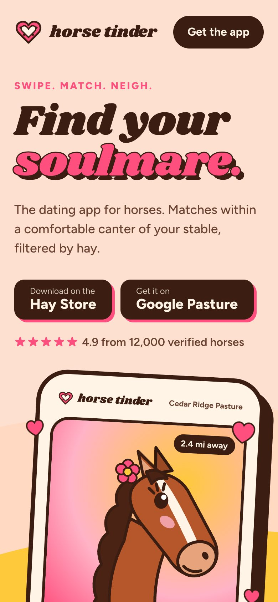
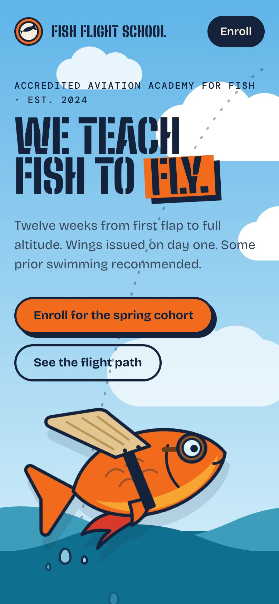

01Live2024
Horse Tinder
Find your soulmare.
The dating app for horses. Matches within a comfortable canter of your stable, filtered by hay.
- Verified profiles — no impostors, no donkeys
- Match radius measured in canters
- Hay-preference filters
- React Native
- Expo
- Supabase

02Live2023
Fish Flight School
We teach fish to fly.
A twelve-week flight academy for fish: flapping, leaving the water, and landing back in it.
- Twelve-week syllabus
- Some prior swimming recommended
- Astro
- Tailwind
- Stripe

03Beta2022
Taxi for Taxis
When your taxi needs a taxi.
Cab-to-cab dispatch that routes the nearest cab to your tired cab. No surge for tired vehicles.
- Next.js
- Postgres
- Mapbox
Also shipped
brag
The launch-video skill that inspired this one.
- Agent skill
- Hyperframes
Phone-only example
Apps with only phone screenshots get a phone frame.
- SwiftUI